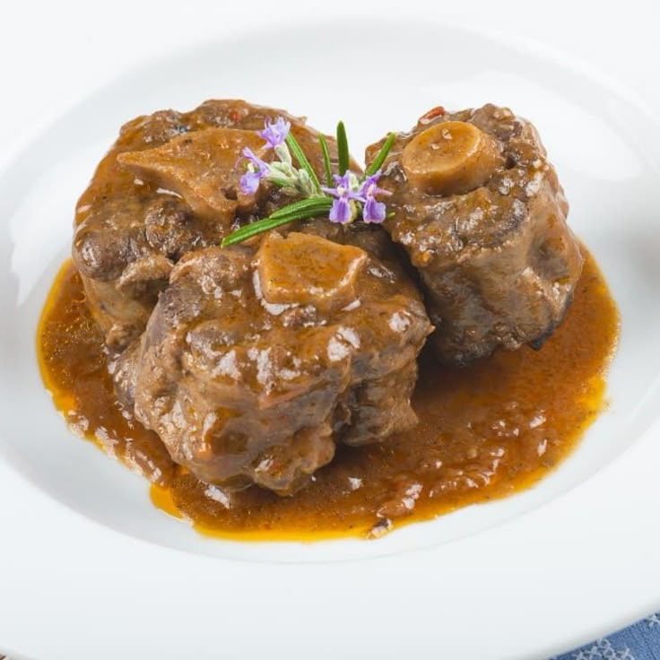

Rabo Toro

Ingredientes:
- 250 g de rabo de toro (o de vacuno, si no encuentras de toro)
- 1/4 de cebolla
- 1/2 zanahoria
- 1/2 puerro (solo la parte blanca)
- 1/2 diente de ajo
- 1/2 tomate maduro o 2 cucharadas de tomate triturado
- 150 ml de vino tinto (uno decente, que te beberías)
- 150 ml de caldo de carne (o agua con media pastilla de caldo)
- 1 hoja de laurel
- 1 ramita de tomillo o romero (opcional)
- Harina (para enharinar la carne)
- Aceite de oliva virgen extra
- Sal y pimienta
Preparación:
- Salpimienta los trozos de rabo y pásalos ligeramente por harina.
- En una cazuela pequeña con aceite caliente, dóralos bien por todos lados. Retira y reserva.
- En el mismo aceite, pocha la cebolla, puerro, zanahoria y ajo picaditos.
- Añade el tomate rallado o triturado y sofríe unos minutos hasta que reduzca un poco.
- Vuelve a meter el rabo a la olla.
- Añade el vino tinto y deja que evapore el alcohol unos 5 minutos a fuego medio-alto.
- Agrega el caldo caliente, laurel y las hierbas.
- Tapa y cocina a fuego muy lento durante 2.5 a 3 horas, removiendo de vez en cuando. Si ves que se seca mucho, añade un poquito más de caldo o agua caliente.
- Cuando la carne esté melosa y se desprenda del hueso, sácala y reduce la salsa si está muy líquida.
- Puedes triturar parte de las verduras para una salsa más ligada, o dejarla rústica.